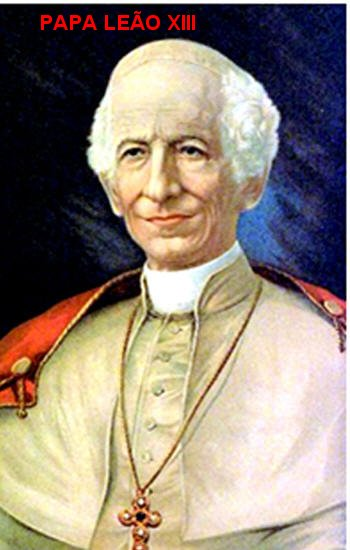
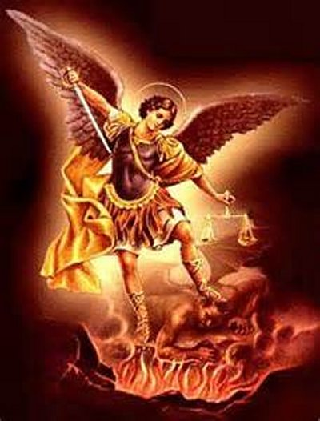
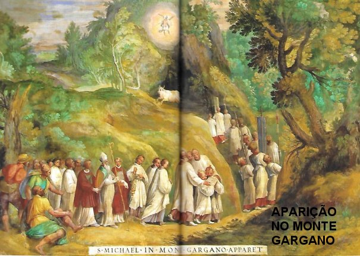
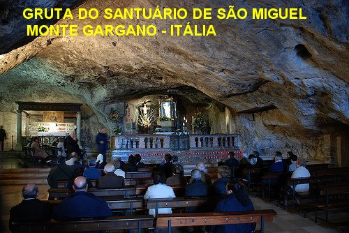
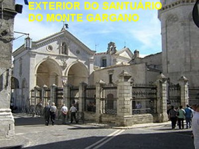

CONSIDERAÇÕES IMPORTANTES
CONSIDERAÇÕES IMPORTANTESMISSÕES E APARIÇÕES
VISÃO DO PAPA
O Papa Leão XIII, em 1886
ordenou ao clero que introduzisse a seguinte invocação no missal
(de orações); e também, os sacerdotes, no antigo rito romano, deveriam 
Esta oração tem uma história muito particular, que descreveremos a seguir, de acordo com o relatório apresentado pelo Padre Domenico Pechenino, que diz o seguinte: "Eu não me lembro o ano exato. Certa manhã, o grande Papa Leão XIII tinha celebrado a Santa Missa e depois, estava assistindo a outra celebração de agradecimento, como de costume. De repente, ele foi visto vigorosamente endireitar a sua cabeça, e em seguida, olhando fixamente para alguma coisa, para além do celebrante da cerimônia. Com os olhos fixos e brilhantes, mas com uma sensação de medo e admiração na face, aparentemente mudava de cor e atitudes. Algo estranho e importante acontecia com ele. Finalmente, como numa recuperação em si mesmo, deu um toque de mãos, ligeiro, suave, mas enérgico e levantou-se. Nós vemo-lo caminhar em direção ao seu escritório particular. Os membros da família seguiram-no com delicadeza, e ansiosos perguntaram suavemente: Santo Padre, não se sente bem? Precisa de alguma coisa? Ele respondeu: Nada, nada. E fechou a porta. Depois de meia hora chamou o Secretário da Congregação dos Ritos e, lhe entregou uma folha escrita, ordenando-lhe que o imprimisse e o fizesse chegar às mãos de todos os Ordinários (Sacerdotes) do mundo”.
O que continha? Era uma oração de invocação ao Príncipe da Milícia Celeste, pedindo a DEUS que prendesse Satanás no inferno.
O Cardeal Nasalli Rocca, a este respeito, também testemunhou, dizendo que o Papa Leão XIII escreveu a oração. E que, quanto à frase: "os demônios que vagam pelo mundo para perdição das almas" tem uma explicação histórica, que muitas vezes era referida pelo seu secretário pessoal, Monsenhor Rinaldo Angeli. Narrava ele que o Papa Leão XIII realmente durante aquela Santa Missa, teve uma visão de espíritos infernais que incidiam sobre a Cidade Eterna, e com esta viva experiência escreveu a oração, a fim de funcionar como uma estrela protetora em todas as Igrejas. Não só isso, mas também escreveu de próprio punho, um exorcismo especial contido no Ritual Romano. Estes exorcismos ele recomendou aos bispos e padres recitá-los muitas vezes em suas dioceses e paróquias. Ele também o recitava muitas vezes durante o dia. Por último, Monsenhor Rinaldo Angeli faz uma séria observação: “É um fato triste observarmos hoje, numa época em que é mais urgente do que nunca apelar para o Arcanjo São Miguel em defesa da Igreja contra os inimigos do mal dentro e fora dela, constatarmos a existência de grande afastamento da devoção ao admirável Príncipe Celeste”.
CONSIDERAÇÕES IMPORTANTES
Considerando a forte ligação que existe entre as missões: de combater Satanás e de defender o povo de DEUS, é bem apropriado realçarmos o texto escrito pelo teólogo e escritor Plínio Corrêa de Oliveira: "Uma observação importante sobre estas duas missões, isto é, de combater os anjos rebeldes e de proteger a Santa Igreja de DEUS, eu acredito que estão intimamente ligadas entre si. Ele (o Arcanjo) defendeu a DEUS, que o usou como se fosse um escudo contra o diabo. Da mesma forma, DEUS quer que ele seja o escudo dos homens e da Santa Igreja Católica contra o diabo. Miguel, no entanto, não é somente um escudo, mas é também a espada que combate e afasta os inimigos do SENHOR. Ele não se limita a defender, mas também atacar, impondo derrotas ao inimigo, e os lançando no inferno. Estas são as duas grandes missões de São Miguel Arcanjo. E por isso, ele foi considerado como um cavaleiro na Idade Média, de fato, o primeiro dos cavaleiros, o cavaleiro celeste, perfeitamente fiel, extremamente forte e angelicalmente puro, como um verdadeiro cavaleiro deve ser. Ele é sempre vitorioso, uma vez que coloca toda a sua fé em DEUS e, após o nascimento da VIRGEM, Nela também coloca toda a sua plena confiança, na nossa MÃE, assim como um verdadeiro cavaleiro deve proceder".

Como grande vencedor de Lúcifer, ao Arcanjo São Miguel também é atribuída à defesa de NOSSA SENHORA, que por sua IMACULADA CONCEIÇÃO, esmaga a cabeça da serpente.

Em outra Visão do Apóstolo São João no livro do Apocalipse se pode constatar outra intervenção do Arcanjo São Miguel (Ap 20,1-6): "Vi um Anjo (Miguel)descer do Céu, trazendo na mão a chave do Abismo e uma grande corrente. Ele agarrou o Dragão, a antiga Serpente - que é o Diabo, Satanás –, acorrentou-o por mil anos e o atirou dentro do Abismo, fechando-o e lacrando-o com um selo para que não seduzisse mais as nações até que os mil anos estivessem terminados. Depois disso, ele (o Dragão) deverá ser solto por pouco tempo. Vi então tronos, e aos que neles se sentaram foi dado poder de julgar. Vi também as vidas daqueles que foram decapitados por causa do testemunho de JESUS e da Palavra de DEUS, e dos que não tinham adorado a Besta, nem sua imagem, e nem recebido “a marca” sobre a fronte ou na mão: eles voltaram à vida e reinaram com CRISTO durante mil anos. Os outros mortos, contudo, não voltaram à vida até o término dos mil anos. Esta é a primeira ressurreição. Feliz e santo aquele que participa da primeira ressurreição! Sobre estes a segunda morte (a morte eterna) não tem poder: eles serão sacerdotes de DEUS e de CRISTO, e com ELE reinarão durante mil anos”.
Por outro lado, o Arcanjo tem uma preocupação toda especial com as almas dos falecidos, daqueles que tinham devoção por ele, e que vão comparecer diante de DEUS. Toda a tradição cristã lhe atribui esta augusta e generosa função. São Tomás de Aquino disse:"O Arcanjo São Miguel vem em auxílio dos cristãos, não só na hora da morte, mas também no juízo particular. Ele permanece perto da alma até a emissão do julgamento, e se esforça para torná-lo favorável".
Também São Basílio escreveu:"Estou seguro em dizer, o Arcanjo São Miguel, no momento supremo se lembrou de mim e me levou em suas asas para dissipar a minha confusão”.
A ÚLTIMA MISSÃO
Sem a menor dúvida, a “Última Missão” do admirável Comandante, acontecerá no Fim do Mundo. O profeta Daniel disse: "Nesse tempo levantar-se-á Miguel, o Grande Príncipe, que se conserva junto dos filhos do Teu povo. Será um tempo de tal angustia qual jamais terá havido até aquele tempo, desde que as nações existem. Mas nesse tempo o Teu povo escapará, isto é, todos os que se encontrarem inscritos no Livro” (no Livro da Vida) (Dan 12,1).
Ele aparecerá mais do que nunca como o vingador dos direitos de DEUS. São Paulo diz na segunda carta aos Tessalonicenses (2,3-4): "Não vos deixeis enganar por pessoa alguma nem de modo algum; porque deve vir primeiro a apostasia, e aparecer o homem ímpio, o filho da perdição, o adversário, a levantar-se contra tudo que se chama DEUS, ou recebe um culto, chegando a sentar-se pessoalmente no templo de DEUS, e querendo passar por DEUS”.
Com a mesma espada que ele derrotou Lúcifer, irá derrotar agora o Anticristo, quando o tempo estiver cumprido, segundo o ensinamento de todos os Padres da Igreja. E no quotidiano, apesar de todas as tramóias de Satanás e de seus asseclas, a Igreja permanecerá inexpugnável, em virtude da permanente ajuda do Arcanjo.
No final de tudo (Fim do Mundo), DEUS ainda recorrerá ao seu ministério quando chegar à hora do “grande milagre da ressurreição geral”. Ele, o Arcanjo, convocará todas as pessoas para o Juízo Final, como diz São Paulo:
"Quando o SENHOR, ao sinal dado, à voz do Arcanjo (São Miguel) e ao som da trombeta Divina, descer do Céu, então os mortos em CRISTO ressuscitarão primeiro”;(1 Tessalonicenses 4,16).
É à luz destes textos, embora bem reduzidos em face das limitações do Site, que aponta algumas das muitas e variadas Missões dentro da cidade de DEUS realizadas pelo Arcanjo São Miguel, que sugere com maravilhosa evidência, a quantidade impressionante e admirável das atividades exercidas e realizadas por Ele.
APARIÇÕES DE SÃO MIGUEL
SANTUÁRIO NO MONTE GARGANO
Em 1251, no Sipontium-Siponto na Apulia,
as autoridades querendo agradar ao Imperador alemão chamado Manfred, proclamaram que
o seu nome seria alterado para 
Era o ano 492, e a primavera já se manifestava, colorindo a natureza com o desabrochar das mais belas e perfumadas fores. Numa propriedade rural próxima, um novilho, mal contido em seu pasto, rompeu as suas obrigações, pulou o cercado, e saiu em busca de um pasto mais amplo segundo a sua vontade. Era um touro, o mais belo do rebanho de gado, pertencente ao senhor Elvio Emmanuele morador de Sipontium, que tinha o apelido de Garganus, porque suas terras também abrangiam a montanha de mesmo nome. No dia seguinte, quando Emmanuele observou o desaparecimento do seu melhor touro, ficou extremamente aborrecido e colocou a culpa nos seus empregados. E sem demora, em companhia deles, sob intenso calor, foram à procura do animal. Depois de horas de busca, o encontram, numa encosta da montanha. As montanhas naquela região são cheias de cavernas e desfiladeiros, e Emmanuele tremeu ao pensar que o seu belo touro ficou ferido... Isto porque, o encontram, mas em que posição, o touro estava deitado, de joelhos, na entrada de uma caverna. Todos os esforços foram feitos para removê-lo dali, sem qualquer êxito. Já chegava a noite e o animal permanecia imóvel, apenas limitando-se a mugir tristemente, quando os homens o levantaram. O nervosismo começou a envolvê-los, porque anoitecia e o touro não queria andar. Então ocorreu o pensamento de deixá-lo ali para buscá-lo no dia seguinte. Nesta perspectiva, Emmanuele ficou bastante irritado e receoso, de que no dia seguinte, o touro pudesse desaparecer novamente. Pegou o seu arco e lançou uma flecha no animal para feri-lo propositalmente sem gravidade. Só que, por incrível que possa parecer, a flecha, ao invés de atingir o animal, fez uma curva e voltou atingindo o próprio atirador, ferindo-o no braço. Estarrecido e sangrando, ficou admirado com o acontecido, assim como todos os servos que estavam presentes, que tentaram ajudá-lo no ferimento da flecha.
Quando regressaram, o fato se espalhou rapidamente em Sipontium, deixando as pessoas perplexas. A história chegou aos ouvidos do Bispo Lorenzo, que quis a confirmação dos fatos com Emmanuele e os seus servos. E diante da realidade, o Bispo não hesitou em atribuir uma origem sobrenatural ao incidente. Apesar de permanecer com alguma dúvida, o Bispo decidiu decretar ao povo do lugarejo: três dias de jejum e de orações. No terceiro dia, descansava o Bispo na pequena varanda da sua casa quando lhe apareceu um imponente cavaleiro que lhe disse: "Eu sou o Arcanjo Miguel, e estou sempre na presença de DEUS. A caverna é sagrada para mim, é minha escolha; Eu mesmo sou o guardião vigilante. Sou o autor do prodígio da caverna. Eu a escolhi para o meu Santuário na Terra. Lá onde se descortina a rocha pode ser perdoado os pecados da humanidade (...). o que aqui for pedido em oração será concedido. Ide, pois, na montanha e dedique a gruta ao culto cristão." E logo em seguida, desapareceu.

Feliz com o acontecimento, o Bispo Lorenzo exultou com a oportunidade de conhecer a Vontade Divina, e assim, procurou da melhor maneira obedecer ao desejo do Arcanjo. Entretanto, a interferência dos infiéis não tardou: os bárbaros colocaram uma cerca fechando a estrada, impedindo a passagem de Sipontium para a Gruta do Anjo.Imediatamente, o Bispo Lorenzo reuniu o povo na Igreja e pediu que jejuassem e rezassem suplicando o auxílio do Arcanjo. O Arcanjo novamente apareceu ao Bispo e, "prometeu a vitória, se os habitantes de Siponto decidissem enfrentar os bárbaros com um forte contra-ataque”. No dia seguinte, quando os pagãos tentavam uma manobra para sitiar completamente o acesso, os habitantes locais, atendendo a convocação do senhor Bispo, corajosamente enfrentaram os pagãos, ao mesmo tempo em que uma chuva torrencial de rara violência desceu com relâmpagos e grandes trovões, dispersando totalmente o inimigo. No dia 8 de maio, em agradecimento, o Bispo com o povo da cidade foi à montanha para rezar e dar graças pela preciosa e eficaz intercessão do Arcanjo, e então, outra especial surpresa aconteceu, todos ouviram um maravilhoso canto angélico na Caverna que o senhor Bispo ia consagrar. Admirados e comovidos, decidiram se aconselhar com o Papa Gelásio I, para saber o que deviam fazer. O Santo Padre respondeu que o dia mais adequado para a consagração da Gruta era o dia 29 de setembro, data escolhida para homenagear os três Arcanjos que conhecemos: São Gabriel, São Rafael e São Miguel. Mas, o Sumo Pontífice decidiu que seria celebrado um tributo de louvor a SANTÍSSIMA TRINDADE, suplicando a São Miguel, inspirar os corações, para que de fato fosse um acontecimento inesquecível. O Bispo Lorenzo convidou para o dia 21 de Setembro seis bispos da região para ajudá-lo na celebração do tributo de louvor: o Arcanjo apareceu a Lorenzo e lhe disse:
"Fixe o seu
pensamento em consagrar a minha caverna, que escolhi como meu palácio, e com os
meus Anjos eu já a consagrei. Nela você vai encontrar as marcas, bem como a
minha efígie, o altar, o pálio e a cruz. Vai entrando na caverna, e sob os meus
cuidados ofereça as orações. Amanhã celebrará o Santo 
Tudo aconteceu pontualmente no dia 29 de setembro do ano 493, juntamente com milagres prodigiosos de todos os tipos. Assim, o Monte Gargano tornou-se o “Monte Sant'Angelo” (ou seja, a montanha do Santo Anjo) e logo com todo o entusiasmo do povo, começou a construção da Basílica Celestial em cima da Caverna.
Toda a Cristandade ajudou, mesmo os turcos Zenone Basileus, eles enviaram os mais belos mármores de Constantinopla para ajudar a construir e decorar a Igreja de São Miguel Arcanjo.
Havia muitos anos, aquela caverna não era um local neutro, mas um lugar de antigo culto pagão que o senhor Bispo de Sipontium tinha todo o interesse em cristianizar. Principalmente considerando que os dois deuses pagãos que ali eram venerados, um era “Mitra, deus do sol” e o outro era “Apollo, um deus que tinha atributos que lembravam o verdadeiro poder Divino do Arcanjo São Miguel".
E assim, o Santuário do Monte Gargano já se desenhava para um futuro bonito e triunfante. Ao longo da Idade Média, os peregrinos ilustres se sucediam na Basílica Celeste. Foi visitada por diversos Papas: Gelásio I; Agapito I (morto em 536); São Gregório, o Grande; São Celestino V; até Urbano VI (falecido em 1389). Posteriormente, nas décadas atuais veio o Papa João Paulo II, diversos Príncipes, Imperadores Alemães até Carlos I d’Angiò e Fernando o Católico. Assim como, em todas as épocas muitos Santos visitaram e rezaram na Gruta de São Miguel Arcanjo: São Bernardo de Claraval; São Francisco de Assis; São Tomás de Aquino; Sta. Brígida da Suécia; São Francisco da Paula, e muitos outros. No momento da sua peregrinação no ano 1221, o “Pobrezinho de Assis” não se julgou digno de entrar no Santuário e passar a noite em oração no trono".
Mas foram, sobretudo, os reis Lombardos, os Normandos da Itália, e os Cruzados que deram ao Monte Sant'Angelo toda a sua glória, e popularizou São Miguel Arcanjo através da Europa. No ano de 1656 a peste negra vitimou também no Monte Gargano. O Arcebispo Dom Alfonso Puccinelli recomendou orações, jejuns e invocou a ajuda do Arcanjo, que apareceu no dia 25 de setembro de 1656 e disse ao Bispo: “Eu sou o Arcanjo Miguel. Qualquer um que procurar as pedras desta caverna será libertado da peste. Abençoei as pedras, esculpindo nelas o sinal da cruz e o meu nome".
"O Bispo gritou milagre, milagre!" O povo pegou e levou as pedras para casa e a praga desapareceu.
Por todas as maravilhosas curas que aconteceram e os extraordinários fatos lá ocorridos, transformaram o Santuário de São Miguel em Gargano no Monte Sant'Angelo na Apulia, "Casa de DEUS e Porta do Céu" um lugar de paz e perdão. E por isso mesmo, desde o dia 25 de junho de 2011, o Santuário tornou-se “Um Patrimônio Mundial da UNESCO”, e foi adicionado no local os títulos “I Longobardi in Italia, I luoghi del potere”. (Os Lombardos na Itália, local das virtudes) (568-774 dC)